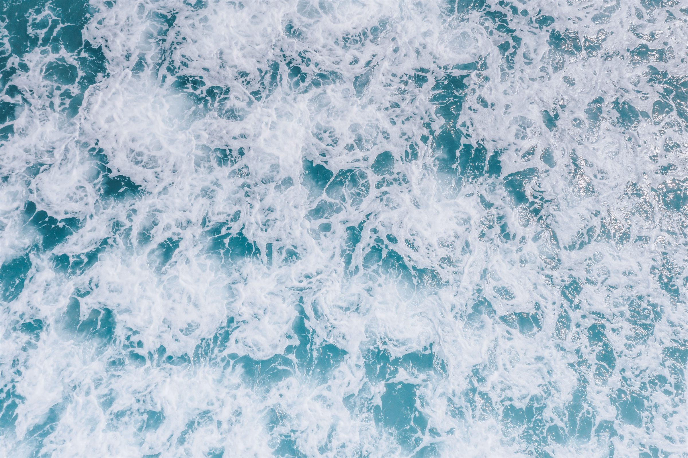
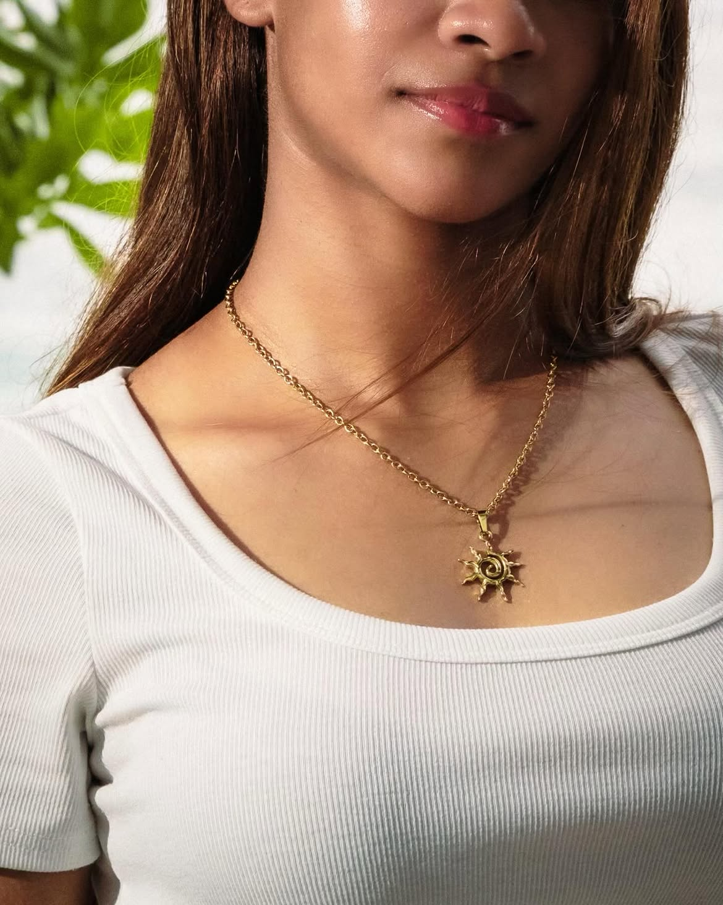
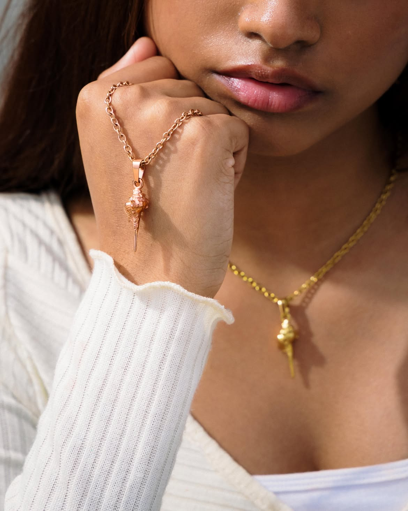
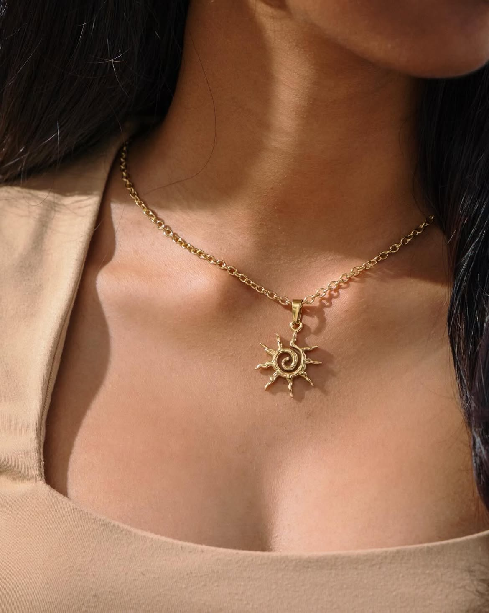
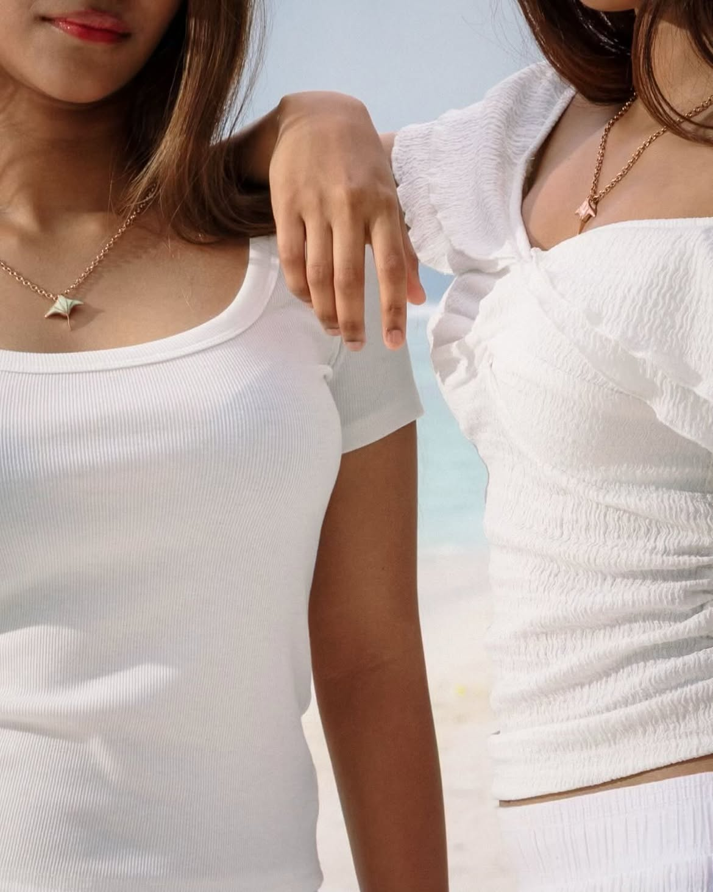
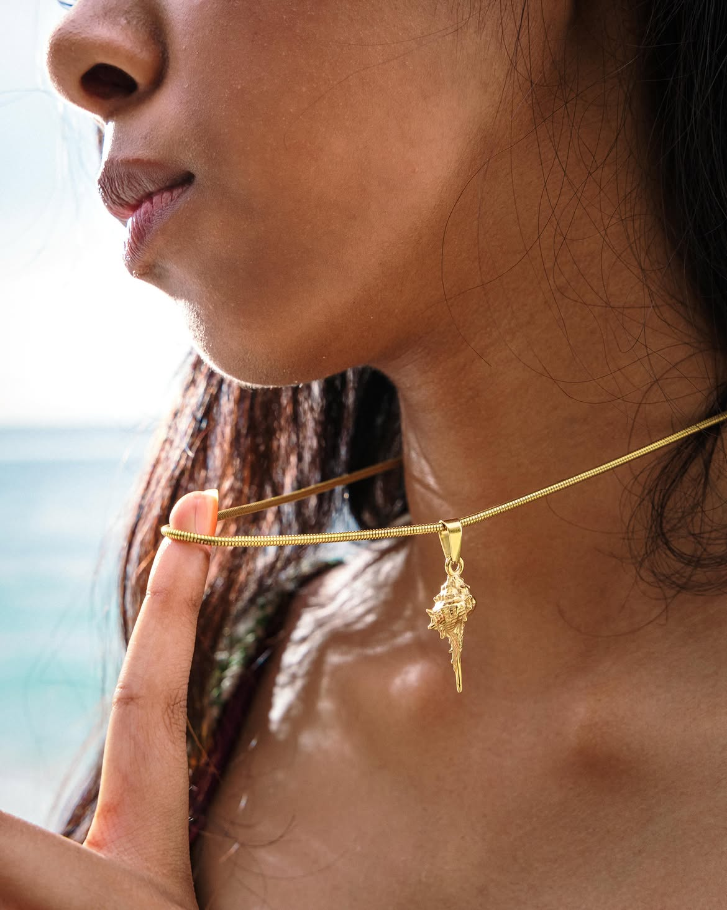

“Sitting on a joali with friends, watching the slight komorebi leak through the leaves. Staring off at the ocean where the light dances with the waves, flickering into your eyes. The Sun pendant was inspired by the first settlers of the Maldives, worshippers of nature. Upon discovering a foreign land, they had everything they could ask for, the water, the sand, and the sun. You only realize how much you miss it once it is gone. So why not keep it forever?”
enquire
Akiri Studio
Origin
In Dhivehi, akiri describes the small,
naturally broken pieces of coral
found along our shores
އަކިރި: މުރަކައިގެ މަރުވެފައި ހުންނަ އެތިއެތިކޮޅު
About
About Us
Inspired by the resilient coral rubble of our shores, Akiri Art Studio celebrates the intersection of Maldivian heritage and contemporary jewelry design.
Our mission is to honor the stories of our ancestors by transforming cultural symbols into elegant, wearable art.
By blending traditional inspiration with modern aesthetics, we ensure that the spirit of the Maldives lives on in every piece we create.
Collection
Maldives



the sun pendant
Akiri Studio — Collection 01
Journal
The water The sand The sun

Our promise
Akiri Studio is a brand created to allow everyone to be rooted to Maldivian culture. It is an invitation to take back a story or a memory of what once was, allowing you to live in the moment every time you wear our statement pieces and to savor every second of your time in the islands. We, here at Akiri Studio, aim to produce products of exceptional quality at affordable costs, ensuring that everyone has the opportunity to relive their memories through our jewelry. We believe that heritage should be accessible, and we pour heart and effort into our ideas to ensure our customers feel a true connection to the craft.
The environment
Beyond the jewelry itself, we are deeply committed to the environment that inspires us. Our packaging is entirely eco-friendly, using sustainable, plastic-free materials to protect the very oceans and reefs that define our home. By choosing Akiri, you are not only wearing a piece of Maldivian identity but also supporting a brand that respects the delicate balance of our natural world. Every material is thoughtfully sourced to ensure durability and ethical standards, so you can feel as good about your purchase as you do wearing it. From the initial sketch to the moment you unbox your piece, we strive for excellence in every detail, ensuring that your experience is as seamless and beautiful as the islands themselves.
